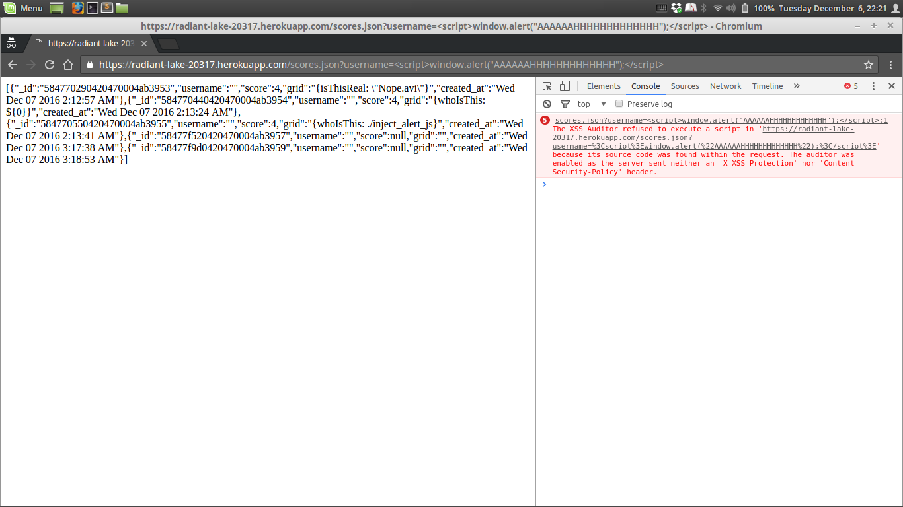

We are making a preliminary pass at the 2048 Highscore Center application radiant-lake-20317 with the goal of finding flaws of any and all types, with an emphasis on security.
radiant-lake-20317 is an application that stores scores from the popular game 2048. Scores are primarily associated with a username and a time, though additionally the final state of the grid is available upon request.
Scores are submitted through the POST /submit.json route, with a score, a username, and a grid attached to the request as data.
Detailed information may be requested in JSON format from the GET /scores.json route, provided that a username is provided as a query string (?username=...). All entries associated with that username are then returned as JSON. A failure returns an empty list and a failure status code. An overview of all scores tracked is accessible at the GET / route.
We first check for the obvious vulnerability: a username that is actually a payload that causes arbitrary javascript to execute when the leaderboard is shown. Since it looks like usernames are being displayed exactly as they are entered, we suspect that little to no sanitiation is being done.
We then notice that the GET /scores.json route looks as if it is nothing more than a thin wrapper around a database call, so we attempt a database injection attack to see whether our query strings are sanitized before being passed along.
We throw junk at POST /submit.json and GET /scores.json to see what kind of delightfully strange things happen.
Issue: Database Injection
Description: Database injection via a query string in the form username[$ne]=username causes all scores for people whose usernames are not username to be dumped.
GET /scores.json does not sanitize the query strings it accepts, allowing potentially malicious query strings into the database driver.
Location: Database injection is possible along the GET /scores.json route
Severity: Medium
Since there is no sensitive data stored in the database at the moment, and the vulnerability does not extend to arbitrary code execution or arbitrary database operations, attackers are limited in what they can obtain through this vulnerability.
However, this vulnerability still represents a failure to keep user data secure and a failure to keep usernames private.
Suggested Resolution: Sanitize query strings to remove or escape character sequences known to change the intent/behavior of the database query. For example, the username field should not contain [$ne] in any form.
Since it seems like most of the mongoDB operators are of the form $XX, it may be sufficient to simply run the username through something in the spirit of username = username.replace(/\$/g, '')) to remove all instances of $.
Issue: XSS attacks are possible.
Description: XSS vulnerabilities allow attackers to inject and run arbitrary code in the web application. For example by submitting the username <script> window.alert("AAAAAAHHHHHHHHHHHHH");</script>
Location: GET / is vulnerable to javascript injection.
Severity: High.
This is an arbitrary code execution vulnerability. Anything goes.
Suggested Resolution: XSS attacks rely on user input being used to build content without proper sanitizing and filtering. It is difficult to protect yourself completely, but removing <script> tags is a good start.
Issue: Completeness of submission data not enforced
Description: The application should only accept data from POST /submit.json if all three fields (username, score, grid) are present and correct. As is, the web application does not do this correctly.
Specifically, the web application will accept any request that hits POST /submit.json and an entry will be created in the database, with as many empty fields as were missing from the request body.
Location: GET /submit.json does not properly check the integrity of the input it receives.
The effects are visible when inspecting the output given by GET /scores.json with the appropriate query strings.
Severity: Low
Incomplete data should not be the end of the world, but it sure is annoying.
Suggested Resolution: Employ stricter integrity checks for the request body along POST /submit.json.
The web application radiant-lake-20317 has a number of security vulnerabilities, mostly stemming from a lack of distrust for user input. The issues found here can, for the most part, be mitigated by stricter checks on user input.
The maintainer may also consider avoiding res.header("Access-Control-Allow-Origin", "*");, as that makes it very easy for data to be submitted from anywhere, not just the intended web application.
The maintainer may also consider removing the explicit mongodb uri from the application source. Although this is not exposed to the client, it is one more small thing to change when transplanting applications, e.g. when testing locally.
Below, we provide an interesting client-side error that results from the above issues but is not a new issue in and of itself.
